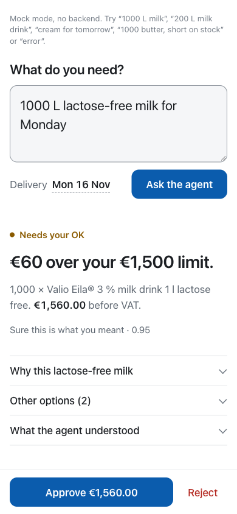
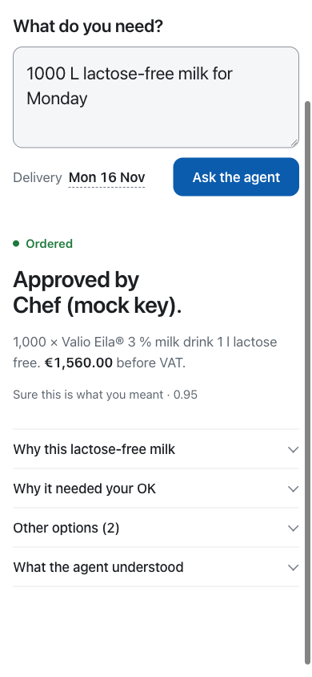
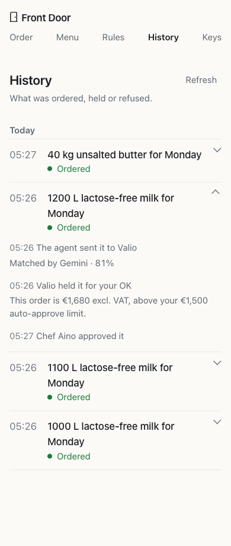
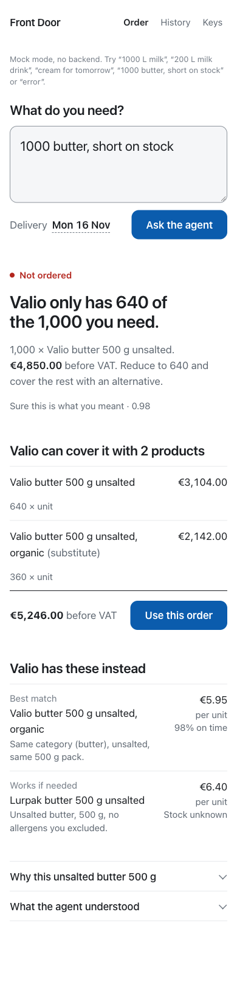

Front Door · Valio Aimo Trusted Trade Agents · Junction 2026
Trusted trade agents for Valio Aimo.
The problem
¹ Gartner, via Digital Commerce 360, Nov 2025 · ² valioaimo.fi; our research, docs/research/valio-context.md
What we built
The door re-checks every order, from any agent, against the buyer's mandate. Unsure means ask.
Demo, live on Valio's API
"100 litraa maitoa", spoken, €156, by itself
1000 L, €60 over, the chef approves
Menu for 80, cart of €881


Voice, during service
One box for kebab shops, cafés and restaurants, typed or spoken. Same door, same rules. In Helsinki, "as soon as possible" gets Cash & Carry and Click & Collect suggestions.
Trust and controls · J3

Exceptions · J4

Open by design · J5
OpenAPI 3.1, JSON Schemas, MCP server, Ed25519 signed statements, RFC 9421 agent signing (optional), GS1 allergens
Peppol BIS Order / UBL 2.1, AP2 mandates
Signed AP2-style mandates, Postgres
Gemini decides when to ask
| threshold | handled alone | wrong autos |
|---|---|---|
| 0.6 | 15 | 0 |
| 0.7 | 14 | 0 |
| 0.8 | 12 | 0 |
30 hand-labelled cases, real Valio products
Caught by our own QA
trap coffee milk for "milk"
Cheapest and barely confident, so it won on price. Now confidence leads, and it's a labelled trap.
Codex as our adversary
Caught prompt-injection bypasses, unvalidated confidence and stale approvals.
Real vs mocked, and next
Any agent can visit. Only the right orders get in.